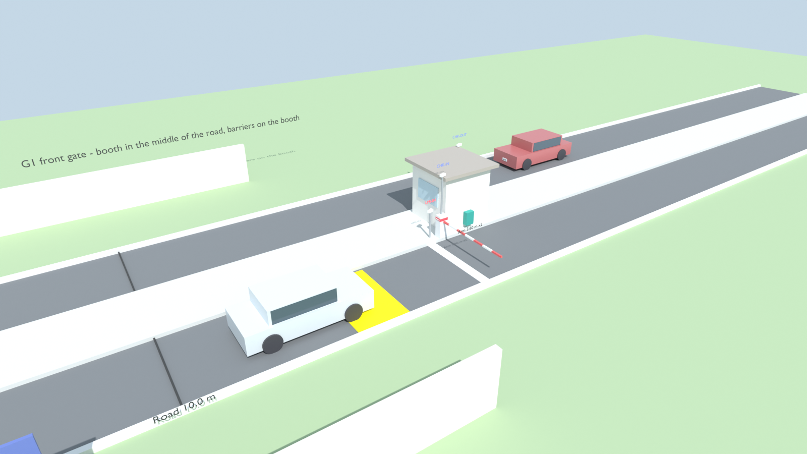
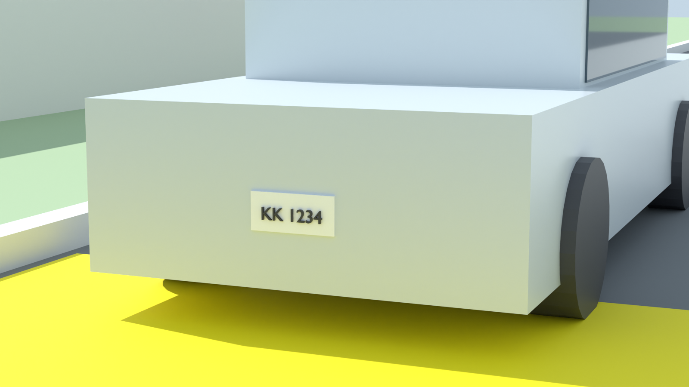
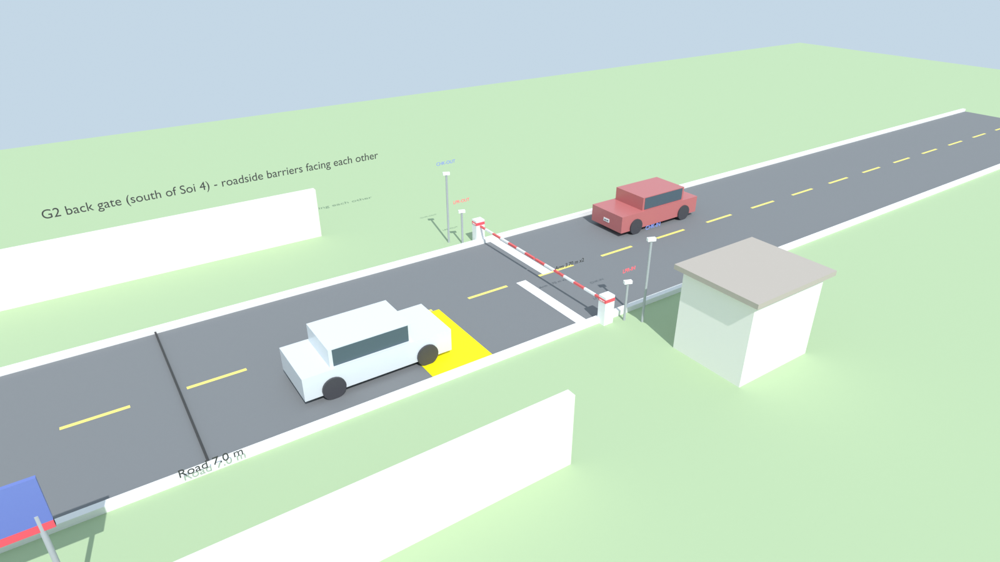
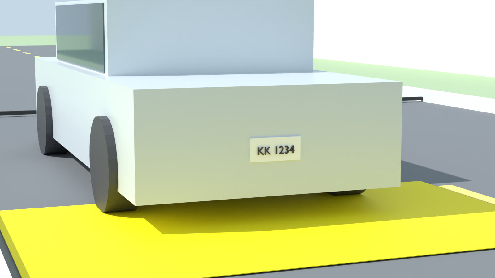

เรนเดอร์จาก Blender 5.1 (Cycles) ด้วยสคริปต์ camera-plan/blender/build_gates.py ตามแบบที่ออกไว้ ภาพขวาคือมุมจากกล้อง LPR ขาเข้า (มุมเลนส์ 30°) ขณะรถอยู่ที่จุดจับป้าย ไฟล์ .blend อยู่ในโฟลเดอร์เดียวกันใน repo เปิดแก้ใน Blender ได้




ขนาดเป็นค่าประมาณ (แก้ได้ที่ DIM ในสคริปต์) ตู้ VAS117 และป้ายเป็นสัดส่วนประมาณจนกว่าจะได้สเปกจริง